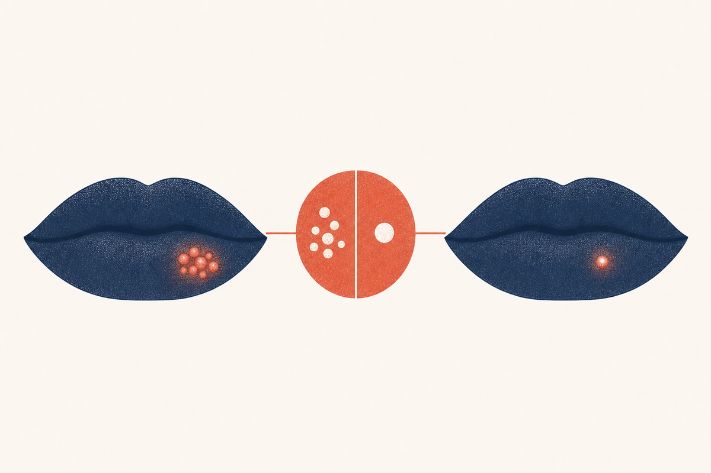

Key Takeaways
- A cold sore is a contagious HSV-1 viral infection; a pimple is an inflamed, blocked pore and is not contagious. The treatment is different for each.[1][4]
- The clearest early clue is the prodrome: a cold sore tingles or burns before it appears, while a pimple usually just feels tender as it swells.[1][2]
- Cold sores form a cluster of tiny fluid-filled blisters that then weep and crust; pimples are typically a single solid bump, sometimes with a white or yellow center.[2][3]
- A cold sore lasts about 7 to 10 days and frequently recurs in the same spot; a pimple usually clears in about 3 to 7 days and does not recur in a fixed location.[4][7]
- Pimples should not be popped, and neither should cold sores; both are worsened by squeezing.[7][1]
- If you are uncertain, a clinician can often distinguish them on a quick look, and uncertainty over a possibly contagious sore is a reason to avoid kissing and close contact until it is clear.[6][3]

Different Causes
The single most important difference between a cold sore and a pimple is the cause, which drives everything else.
A cold sore is caused by herpes simplex virus type 1 (HSV-1), an infection most people acquire in childhood that then stays in the body for life. After the initial infection the virus hides in nerve cells and reactivates periodically, which is why cold sores tend to come back in the same location again and again.[5][3]
A pimple is not an infection in the same sense. It develops when a hair follicle or skin pore becomes plugged with oil and dead skin cells and then becomes inflamed, often with a contribution from the bacteria Cutibacterium acnes that normally lives on the skin. Pimples are not caused by a contagious virus and are not something you catch from another person.[7][4]
This difference has a direct practical consequence: a cold sore can be spread to others and can be transmitted to a partner's genitals through oral sex, while a pimple cannot be transmitted at all.[6][3]
How They Look Different
Both can appear as a red bump at the edge of the lip, which is the heart of the confusion. Look more closely and the differences are clear.
- Cold sore: forms a cluster, or crop, of several very small, fluid-filled blisters grouped close together, usually right on or just over the border of the lip. Over a few days the blisters break and merge into a weepy sore that then crusts with a yellow-brown scab.[2][3]
- Pimple: is usually a single, dome-shaped bump with a smooth surface. It may rise to a white or yellow center (a pustule), but it does not form a cluster of separate tiny blisters and does not weep or crust the way a cold sore does.[7][4]
The clustering and the blister-to-crust sequence are the visual signatures of a cold sore. If you see multiple tiny blisters that later ooze and scab, it is almost certainly a cold sore rather than a pimple.[2]
How They Feel Different
The sensations also differ, and this is often the earliest clue a patient can use.
A cold sore typically announces itself with a prodrome, a tingling, itching, or burning sensation at the spot one to two days before anything is visible. This is distinctive and is a signal to start antiviral treatment before the blister forms.[1][9] Once visible, a cold sore is often described as painful, raw, and weepy.
A pimple does not usually tingle or burn beforehand. It develops as a tender, firm bump that becomes sore as it swells, without the characteristic pre-blister tingling. The pain is more of a mild pressure or tenderness than the burning of a cold sore.[7][2]
If you felt a tingle before the bump appeared, it is far more likely a cold sore than a pimple, and that tingle is the moment to act.[9][1]
| Sensation | Cold sore | Pimple |
|---|---|---|
| Before it appears | Tingling, itching, or burning[1] | Usually none, then a tender bump[7] |
| Once visible | Raw, burning, weepy pain[2] | Pressure-like tenderness as it swells[7] |
| Course | Blisters, then weeping, then crust[3] | May come to a white center, then flatten[7] |
Contagious or Not
This is the most consequential difference. A cold sore is contagious. The fluid inside the blisters is full of live virus, and the sore can shed virus until it has fully healed, plus HSV-1 can be shed in saliva even when no sore is visible.[5][3] A cold sore can be passed through kissing, shared lip products or utensils, or oral sex.[6]
A pimple is not contagious. You cannot transmit a pimple to someone else, and while squeezing a pimple can spread bacteria across your own skin and cause more breakouts, it poses no transmission risk to others.[7]
The practical advice flows from this: if you are unsure whether a lip bump is a cold sore, treat it as though it might be contagious, which means avoiding kissing, sharing items, and oral sex until the question is settled. This is a small precaution with a meaningful payoff, especially around infants and immunocompromised people.[6][5]
How Long Each Lasts
The timelines are another useful differentiator in hindsight. An untreated cold sore typically runs about 7 to 10 days from first tingle to complete healing, and up to 14 days in more severe cases.[4][2] A pimple commonly runs a shorter course, often clearing within about 3 to 7 days, though deeper, larger pimples can linger longer.[7]
There is also the question of recurrence. Because HSV-1 persists in nerve cells, cold sores recur, often in the same spot, in response to triggers like sun, stress, or illness. Pimples are not tied to a persistent virus and do not recur in a fixed location the way cold sores do, though some people are simply prone to repeated breakouts around the lip.[3][1]
Side-by-Side Comparison
| Feature | Cold sore | Pimple |
|---|---|---|
| Cause | HSV-1 virus[5] | Blocked, inflamed pore[7] |
| Early warning | Tingling or burning prodrome[1] | Tender bump, no tingle[7] |
| Appearance | Cluster of tiny fluid blisters, then crust[2] | Single solid bump, maybe white-centered[7] |
| Contagious | Yes[6] | No[7] |
| Duration | 7 to 10 days[4] | About 3 to 7 days[7] |
| Recurs same spot | Yes, frequently[3] | Not in a fixed spot |
| Treatment | Antiviral drugs[4] | Standard acne care[7] |
Why the Treatment Differs
Because the causes are different, the treatments are different, and using the wrong one is a common mistake.
A cold sore is treated with antiviral medication. For the shortest and mildest episode, an oral antiviral such as valacyclovir, acyclovir, or famciclovir started at the first tingle is most effective, while topical antivirals offer only modest benefit.[4][9] Antibiotics do nothing for a cold sore, because it is viral, not bacterial.[4]
A pimple is treated with standard acne care, which may include gentle cleansing and over-the-counter products containing benzoyl peroxide or salicylic acid, and occasionally prescription topical or oral therapy for persistent acne. Antiviral medication does nothing for a pimple.[7]
One rule applies to both: do not squeeze or pop either one. Squeezing a pimple can push inflammation deeper and cause scarring, and popping a cold sore spreads the virus and risks a bacterial infection.[7][1]
| Approach | For a cold sore | For a pimple |
|---|---|---|
| First-line | Antiviral medication, early[4] | Gentle cleansing, benzoyl peroxide or salicylic acid[7] |
| What does NOT help | Antibiotics, acne treatments[4] | Antiviral drugs[7] |
| Avoid | Picking, popping, sharing[1] | Squeezing, which can scar[7] |
| When to see a clinician | Frequent, large, or non-healing sores[3] | Deep, painful, or scarring acne[7] |
When You're Not Sure
There will be times when the distinction is genuinely uncertain, especially early on. In that case, a few principles help.
First, default to caution about contagion. Until you know it is a pimple, avoid kissing, sharing items, and oral sex.[6] Second, if the spot tingled before appearing, treat it as a cold sore and consider the earliest use of an antiviral, because the treatment window is hours-to-a-day long.[9] Third, a clinician can usually settle the question quickly on visual inspection and can prescribe appropriately. A telehealth visit is well-suited to this, because a clear photo plus your description of a prodrome is often enough for a confident diagnosis.[1][4]
Also remember that a third possibility occasionally masquerades as a lip bump, including a canker sore just inside the lip, a small cyst, a bite, or another skin condition. Persistent, changing, or worsening lesions should be evaluated.[3][8]
Frequently Asked Questions
References
- Opstelten W, Neven AK, Eekhof J. Treatment and prevention of herpes labialis Canadian Family Physician. 2008;54(12):1683-1687.. PMID 19074705
- Leung AKC, Barankin B. Herpes labialis: an update Recent Patents on Inflammation & Allergy Drug Discovery. 2017;11(2):107-113.. doi:10.2174/1872213X11666171003151717
- Woo SB, Challacombe SJ. Management of recurrent oral herpes simplex infections Oral Surgery, Oral Medicine, Oral Pathology, Oral Radiology, and Endodontology. 2007;103(Suppl):S12.e1-18.. doi:10.1016/j.tripleo.2006.11.004
- Cernik C, Gallina K, Brodell RT. The treatment of herpes simplex infections: an evidence-based review Archives of Internal Medicine. 2008;168(11):1137-1144.. doi:10.1001/archinte.168.11.1137
- World Health Organization. Herpes simplex virus fact sheet WHO. Updated May 30, 2025.. who.int herpes fact sheet
- Centers for Disease Control and Prevention. Herpes: STI treatment guidelines, 2021 CDC Division of STD Prevention.. cdc.gov herpes treatment guidelines
- American Academy of Dermatology. Cold sores: diagnosis and treatment AAD public education.. aad.org cold sores
- de Paiva JPG, Sousa-Neto SS, Humberto MAC, Magalhães MAO, Bubola J, Assunção Júnior JNR, et al. Unusual oral presentations of herpes simplex virus-1: a series of eight cases and literature review Special Care in Dentistry. 2025;45(2):e70129.. doi:10.1111/scd.70129
- Spruance SL, Jones TM, Blatter MM, Vargas-Cortes M, Barber J, Hill J, et al. High-dose, short-duration, early valacyclovir therapy for episodic treatment of cold sores: results of two randomized, placebo-controlled, multicenter studies Antimicrobial Agents and Chemotherapy. 2003;47(3):1072-1080.. doi:10.1128/AAC.47.3.1072-1080.2003